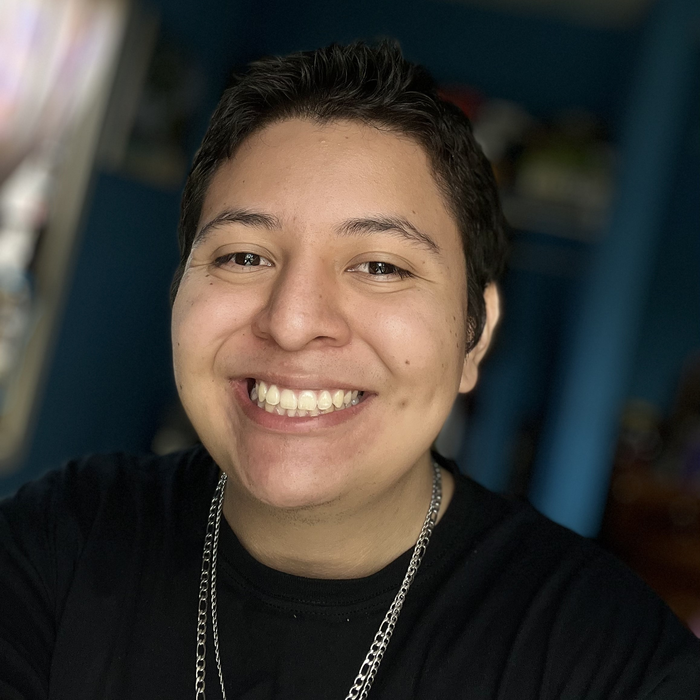

Address 26 Trio St, Belmopan, Cayo | Phone +501 601-0679
Email angelj_carranza@outlook.com

Mission Statement
I constantly research and learn new programming languages, as well as
emerging hardware to improve both my knowledge and skills regarding my
research. I have developed a skill to quickly and efficiently troubleshoot
errors and implementations. I have a goal to become a software developer
and an indie game developer in my downtime.
2021 - Present
I am a technical support agent. I have honed my skills to quickly troubleshoot issues, learn new material and provide excellent support within customer calls. I can clearly present the product to the customers regardless of their technical skill
2022 - Present
I provide technical support to users globally on pc related issues. My tasks include Active Directory admninstration, GSuite admninstration, remote assistance and troubleshooting, among others. I have expereince with Windows common and uncommon problems.
2021 - 2022
I assist customers with onboarding their devices to the platform. I handle customers ranging between 25-500 devices including MDM platforms. I have both direct customer & account client facing experience in regards to deployment and support.
Bachelors of Computer Science
2019-2025
Associates of Computer Information Systems
2017 - 2019